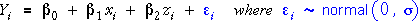
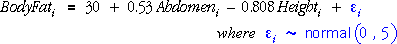

Sample-to-sample variability
The simple normal linear model,

implies that the recorded data are random — if the data were collected again, the response values would be different.
This randomness is also evident in the least squares plane that is fitted to the data — its position varies from sample to sample.
Simulation
The diagram below takes random samples from a normal linear model that could possibly describe how percentage body fat relates to abdomen circumference and height.

A random sample from the model is shown and the least squares plane is outlined in red.
Click Take sample several times and observe that the least squares plane varies — it is also a random entity. Click Accumulate then take a few more samples.